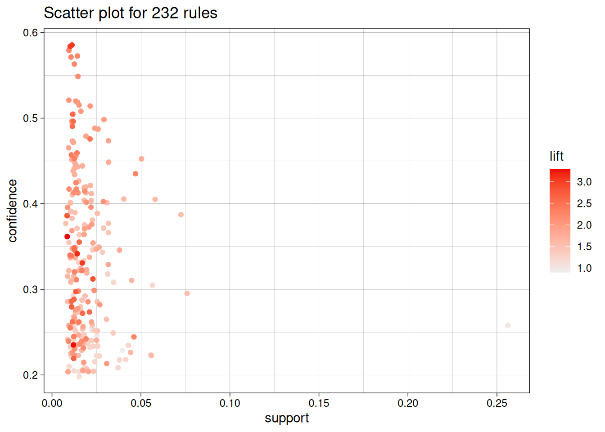

# Laadime laiendused
library('tidyverse')
library('arules') # Seosereeglite arvutamiseks
library('arulesViz') # Seosereeglite joonistamiseks16 Seosereeglid
Seosereegel (association rule) näitab, kui sageli esinevad nähtused üheskoos ja seosereeglite analüüsi eesmärk on tavaliselt selgitada välja selliste nähtuste kogumid. Seosereeglite analüüsi kasutatakse sageli asjade koos esinemise uurimiseks tehingutes nt toodete või teenuste ostmisel.
Sageli nimetataksegi seosereeglite analüüsi hoopis ostukorvi analüüsiks (market-basket analysis, Saltz & Stanton (2017)), sest selle abil saab vastata küsimustele ostjate ostueelistuste kohta.
- Kui sageli ostetakse teatud tooted korraga?
- Mis tooteid tasuks koos reklaamida?
- Millised teenused valitakse korraga?
- Mis tooted tuleks laos paigutada lähestikku?
Seosereeglid põhinevad lihtsalt asjade esinemissagedustel. Seosereeglite leidmiseks kasutatakse Apriori algoritmi. See määrab kõikvõimalikud andmetes esinevad asjade kogumid ja tuvastab need, mis esinevad teatud tugevuse ja kindlusega. Lisaks neile kahele mõõdikule saab seosereegleid hinnata ka ootuspärasuse alusel.
Seose tugevus (support) on asju A ja B sisaldavate tehingute osakaal:
\[\text{tugi}=\frac{\text{tehingud, kus on A ja B}}{\text{kõik tehingud}}.\]
See näitab tõenäosust, et juhuslikus tehingus on asjad A ja B ning iseloomustab reegli sagedust.
Seose kindlus (confidence) on asju A ja B sisaldavate tehingute osakaal ainult asju A sisaldavatest tehingutest:
\[\text{kindlus}=\frac{\text{tehingud, kus on A and B}}{\text{tehingud, kus on A}}.\]
See näitab tõenäosust, et tehingus on B, kui selles on A ning iseloomustab reegli kehtivust.
Seose ootuspärasus (lift) on kindluse ja oodatava kindluse suhe.
\[\text{oodatav kindlus}=\frac{\text{tehingud, kus on B}}{\text{kõik tehingud}}.\]
\[\text{ootuspärasus}=\frac{\text{kindlus}}{\text{oodatav kindlus}}.\]
See näitab reeglis olevate asjade seotust. Selle mõõdiku väärtused iseloomustavad reeglit järgnevalt:
- \(1\) näitab, et A ei mõjuta B olemist tehingus,
- \(>1\) näitab, et A soodustab B olemist tehingus,
- \(<1\) näitab, et A välistab B olemist tehingus.
Enamasti ei võeta järelduste tegemisel arvesse selliseid seosereegleid, mis on liiga ilmselged või millele ei ole seletust ja mis võivad olla seega juhuslikud.
16.1 Seosereeglite leidmine
Seosereeglite analüüsimiseks R keeles peame paigaldama ja laadima laienduse arules ja reeglite kuvamiseks joonistena laienduse arulesViz.
Seosereeglite kasutamisel R keeles on üks võimalus sisestada andmed tekstifailina, milles igal real on ühes tehindus olevad asjad. Järgnevalt laadimegi sellisel kujul oleva toidupoe ostukorvi andmestiku Groceries. Selleks kasutame funktsiooni read.transactions() ja lisame täpsustuse format = 'basket' määramaks, et iga rida esindab ühte tehingut.
tehingud <- read.transactions('andmed/groceries.txt', format = 'basket', sep = ',')
summary(tehingud)transactions as itemMatrix in sparse format with
9835 rows (elements/itemsets/transactions) and
169 columns (items) and a density of 0.02609146
most frequent items:
whole milk other vegetables rolls/buns soda
2513 1903 1809 1715
yogurt (Other)
1372 34055
element (itemset/transaction) length distribution:
sizes
1 2 3 4 5 6 7 8 9 10 11 12 13 14 15 16
2159 1643 1299 1005 855 645 545 438 350 246 182 117 78 77 55 46
17 18 19 20 21 22 23 24 26 27 28 29 32
29 14 14 9 11 4 6 1 1 1 1 3 1
Min. 1st Qu. Median Mean 3rd Qu. Max.
1.000 2.000 3.000 4.409 6.000 32.000
includes extended item information - examples:
labels
1 abrasive cleaner
2 artif. sweetener
3 baby cosmeticsFunktsioon summary() kuvab muuhulgas tehingute ja asjade arvu, sagedasemate asjad nimetused ja sagedused ning tehingute suurused. Konkreetsete tehingute nägemiseks saame kasutada funktsiooni inspect().
inspect(tehingud[1:5]) items
[1] {citrus fruit,
margarine,
ready soups,
semi-finished bread}
[2] {coffee,
tropical fruit,
yogurt}
[3] {whole milk}
[4] {cream cheese,
meat spreads,
pip fruit,
yogurt}
[5] {condensed milk,
long life bakery product,
other vegetables,
whole milk} Lisaks saame kuvada nt teatud toega tehingud. Alljärgnevalt leiame asjad, mis esinevad vähemalt 5% tehingutes.
eclat(tehingud, support = 0.05) %>% sort %>% inspectEclat
parameter specification:
tidLists support minlen maxlen target ext
FALSE 0.05 1 10 frequent itemsets TRUE
algorithmic control:
sparse sort verbose
7 -2 TRUE
Absolute minimum support count: 491
create itemset ...
set transactions ...[169 item(s), 9835 transaction(s)] done [0.00s].
sorting and recoding items ... [28 item(s)] done [0.00s].
creating sparse bit matrix ... [28 row(s), 9835 column(s)] done [0.00s].
writing ... [31 set(s)] done [0.00s].
Creating S4 object ... done [0.00s].
items support count
[1] {whole milk} 0.25551601 2513
[2] {other vegetables} 0.19349263 1903
[3] {rolls/buns} 0.18393493 1809
[4] {soda} 0.17437722 1715
[5] {yogurt} 0.13950178 1372
[6] {bottled water} 0.11052364 1087
[7] {root vegetables} 0.10899847 1072
[8] {tropical fruit} 0.10493137 1032
[9] {shopping bags} 0.09852567 969
[10] {sausage} 0.09395018 924
[11] {pastry} 0.08896797 875
[12] {citrus fruit} 0.08276563 814
[13] {bottled beer} 0.08052872 792
[14] {newspapers} 0.07981698 785
[15] {canned beer} 0.07768175 764
[16] {pip fruit} 0.07564820 744
[17] {other vegetables, whole milk} 0.07483477 736
[18] {fruit/vegetable juice} 0.07229283 711
[19] {whipped/sour cream} 0.07168277 705
[20] {brown bread} 0.06487036 638
[21] {domestic eggs} 0.06344687 624
[22] {frankfurter} 0.05897306 580
[23] {margarine} 0.05856634 576
[24] {coffee} 0.05805796 571
[25] {pork} 0.05765125 567
[26] {rolls/buns, whole milk} 0.05663447 557
[27] {whole milk, yogurt} 0.05602440 551
[28] {butter} 0.05541434 545
[29] {curd} 0.05327911 524
[30] {beef} 0.05246568 516
[31] {napkins} 0.05236401 515 Näeme, et enam kui veerandis tehingutest on piim ja veidi alla viiendikus köögiviljad.
Seosereeglid saame leida Apriori algoritmi kasutades funktsiooniga apriori(). Sealjuures peaksime määrama teatud tingimused leitavatele reeglitele:
supportehk tugi,confideceehk kindlus,minlenehk vähima asjad arvu tehingus,maxlenehk suurima asjade arvu ühes tehingus.
Alljärgnevalt leiame reeglid, mis iseloomustavad vähmalt 1% kõikidest tehingutest (tugi) ja kehtivad 20% juhtudest (kindlus).
# Määrame valikud
valikud <- list(support = 0.01, confidence = 0.2)
# Rakendame Apriori algoritmi
reeglid <- apriori(tehingud, parameter = valikud,
control = list(verbose = FALSE)) %>% # Peidame protseduuri kirjelduse
sort(by = 'confidence') # Järjestame reeglid alates kõige kõrgema kindlusega reeglist
# Kuvame ülevaate reeglitest
summary(reeglid)set of 232 rules
rule length distribution (lhs + rhs):sizes
1 2 3
1 151 80
Min. 1st Qu. Median Mean 3rd Qu. Max.
1.000 2.000 2.000 2.341 3.000 3.000
summary of quality measures:
support confidence coverage lift
Min. :0.01007 Min. :0.2006 Min. :0.01729 Min. :0.8991
1st Qu.:0.01200 1st Qu.:0.2470 1st Qu.:0.03437 1st Qu.:1.4432
Median :0.01490 Median :0.3170 Median :0.05241 Median :1.7277
Mean :0.02005 Mean :0.3321 Mean :0.06708 Mean :1.7890
3rd Qu.:0.02227 3rd Qu.:0.4033 3rd Qu.:0.07565 3rd Qu.:2.0762
Max. :0.25552 Max. :0.5862 Max. :1.00000 Max. :3.2950
count
Min. : 99.0
1st Qu.: 118.0
Median : 146.5
Mean : 197.2
3rd Qu.: 219.0
Max. :2513.0
mining info:
data ntransactions support confidence
tehingud 9835 0.01 0.2
call
apriori(data = tehingud, parameter = valikud, control = list(verbose = FALSE))Näeme, et leiti 232 reeglit keskmise toega 0.0200507 ja keskmise kindlusega 0.3321035.
# Kuvame 20 esimest reeglit
inspect(reeglid[1:20]) lhs rhs support confidence coverage lift count
[1] {citrus fruit,
root vegetables} => {other vegetables} 0.01037112 0.5862069 0.01769192 3.029608 102
[2] {root vegetables,
tropical fruit} => {other vegetables} 0.01230300 0.5845411 0.02104728 3.020999 121
[3] {curd,
yogurt} => {whole milk} 0.01006609 0.5823529 0.01728521 2.279125 99
[4] {butter,
other vegetables} => {whole milk} 0.01148958 0.5736041 0.02003050 2.244885 113
[5] {root vegetables,
tropical fruit} => {whole milk} 0.01199797 0.5700483 0.02104728 2.230969 118
[6] {root vegetables,
yogurt} => {whole milk} 0.01453991 0.5629921 0.02582613 2.203354 143
[7] {domestic eggs,
other vegetables} => {whole milk} 0.01230300 0.5525114 0.02226741 2.162336 121
[8] {whipped/sour cream,
yogurt} => {whole milk} 0.01087951 0.5245098 0.02074225 2.052747 107
[9] {rolls/buns,
root vegetables} => {whole milk} 0.01270971 0.5230126 0.02430097 2.046888 125
[10] {other vegetables,
pip fruit} => {whole milk} 0.01352313 0.5175097 0.02613116 2.025351 133
[11] {tropical fruit,
yogurt} => {whole milk} 0.01514997 0.5173611 0.02928317 2.024770 149
[12] {other vegetables,
yogurt} => {whole milk} 0.02226741 0.5128806 0.04341637 2.007235 219
[13] {other vegetables,
whipped/sour cream} => {whole milk} 0.01464159 0.5070423 0.02887646 1.984385 144
[14] {rolls/buns,
root vegetables} => {other vegetables} 0.01220132 0.5020921 0.02430097 2.594890 120
[15] {root vegetables,
yogurt} => {other vegetables} 0.01291307 0.5000000 0.02582613 2.584078 127
[16] {fruit/vegetable juice,
other vegetables} => {whole milk} 0.01047280 0.4975845 0.02104728 1.947371 103
[17] {butter} => {whole milk} 0.02755465 0.4972477 0.05541434 1.946053 271
[18] {curd} => {whole milk} 0.02613116 0.4904580 0.05327911 1.919481 257
[19] {whipped/sour cream,
yogurt} => {other vegetables} 0.01016777 0.4901961 0.02074225 2.533410 100
[20] {other vegetables,
root vegetables} => {whole milk} 0.02318251 0.4892704 0.04738180 1.914833 228Kõige sagedasem on osta koos teiste toodetega köögivilju ja piima. Esimene reegel näitab, et kui ostetakse tsitruselisi ja juurvilju, siis umbes 58,62% juhtudest ostetakse ka teisi köögivilju. Selliseid tehinguid oli 102 ehk 1,03% kõikidest tehingutest.
Pea meeles!
Seosereeglite korral on olulised seose pooled. Seos A => B näitab, et kui ostetakse A, siis ostetakse ka B, mitte aga vastupidi. Nt kindlus näitab tõenäosust, et tehingus on B, kui selles on A, aga see sama kindlus ei kehti vastupidise seose kohta.
Funktsioon plot() joonistab toe ja kindluse vahelised seosed.
plot(reeglid)To reduce overplotting, jitter is added! Use jitter = 0 to prevent jitter.
Lisades argumendi engine = 'htmlwidget' saame interaktiivse joonise, millel on võimalik võimalik tuvastada konkreetseid reegleid, mida punktid esindavad.
plot(reeglid, engine = 'htmlwidget')To reduce overplotting, jitter is added! Use jitter = 0 to prevent jitter.Kõige intuitiivsem viis reeglite kuvamiseks on võrgustikjoonis, mis näitab korraga seoseid mitme reegli vahel.
plot(reeglid, method = 'graph', limit = 20)
Samuti saame kuvada maatriksi, milles veergudes on A ja ridades B ning nende ristumiskohtades on reeglid.
plot(reeglid, method = 'grouped', limit = 20)
Lisaks saame kuvada reeglid nooltena, mille joon läbib kõiki asju A ja noole ots näitab asja B.
plot(reeglid, method = 'paracoord', limit = 10)
16.2 Konkreetsed asjad reeglites
Eelnevalt leidsime kõikvõimalikud seosereeglid ja uurisime neid, millel oli kõige kõrgem kindlus. Saame aga leida seosereeglid ka ainult meile huvipakkuvate asjade kohta.
Nt kui soovime teada, mis toodetega kaasneb jogurt (ehk jogurt on B), siis lisame funktsioonile apriori() argumendi appearance = list(default = 'lhs', rhs = 'yogurt').
valikud <- list(support = 0.01, confidence = 0.1)
reeglid <- apriori(tehingud, parameter = valikud,
control = list(verbose = FALSE),
appearance = list(default = 'lhs', rhs = 'yogurt')) %>%
sort(by = 'confidence')
plot(reeglid, method = 'graph', limit = 20)
Saame otsida seosereegleid ka teistpidi. Nt kui ostetakse pudelivett, siis mida veel ostetakse (pudelivesi on A)?
reeglid <- apriori(tehingud, parameter = valikud,
control = list(verbose = FALSE),
appearance = list(default = 'rhs', lhs = 'bottled water')) %>%
sort(by = 'confidence')
plot(reeglid, method = 'graph', limit = 20)Kui seosereeglite analüüsi rakendada ostjate ostueelistuste määramiseks ja on olemas teave ka ostjate tausta kohta, siis saab hinnata ka seda, millised ostjad milliseid tooteid eelistavad.